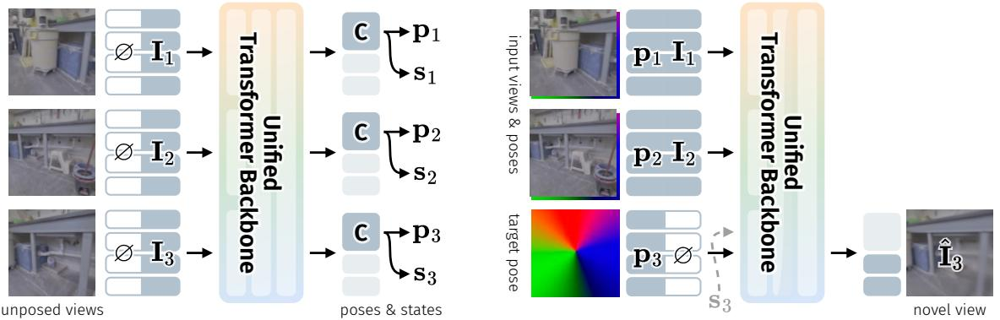
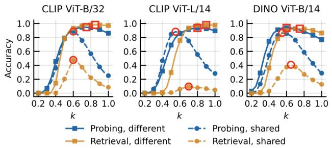
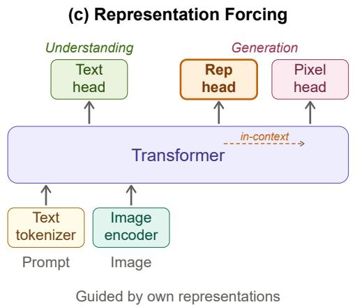
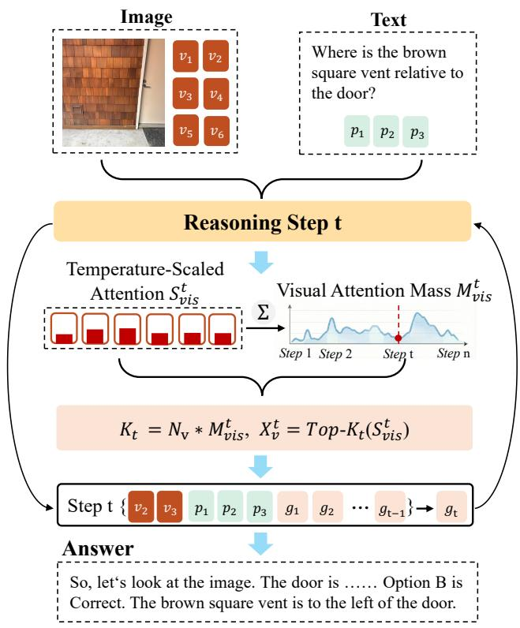
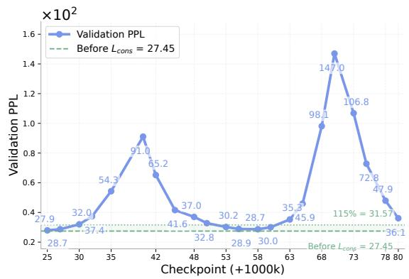
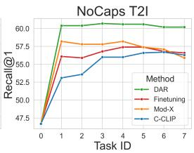
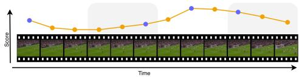
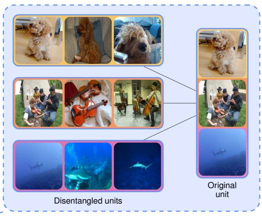

6 月 1 日：RayDer 等视觉表征主线更新
本期聚焦通用视觉表征、视觉语言预训练与视频自监督中最值得跟进的论文，并保留 CCF A/B、OpenReview 与 arXiv 状态线索。
先读 RayDer，它最贴近通用视觉自监督：用真实视频规模化训练单一 transformer，并把几何视图合成做成可观察 scaling 的自监督目标。第二读 How can embedding models bind concepts?，重点看它如何解释 CLIP 的 bag-of-concepts 行为，以及为什么组合泛化需要低复杂度 binding。第三读 Representation Forcing 和 VisionPulse，前者讨论统一多模态模型内部视觉表示如何替代外部 VAE，后者讨论推理时视觉 token 哪些真正有效。FP-MGM、VACSR、MergeTok 适合作为 masked modeling、图文相似度、视觉 tokenizer 三条支线细读；PEEK 和 ELUDe 用作视频帧选择与表征可解释性背景扫读。
论文索引
| 优先级 | 论文 | 类型 | 相关性 | 一句话理由 |
|---|---|---|---|---|
| P0 | RayDer: Scalable Self-Supervised Novel View Synthesis from Real-World Video | arXiv + project | 高 | 把真实视频动态因素当成可吸收扰动，用单一 transformer 扩展自监督 NVS，并报告清晰 scaling 行为。 |
| P1 | How can embedding models bind concepts? | arXiv + ICML 2026 | 高 | 解释 CLIP 类图文 embedding 为什么像 bag-of-concepts，以及组合泛化需要怎样的低复杂度 binding。 |
| P1 | Representation Forcing for Bottleneck-Free Unified Multimodal Models | arXiv + project | 高 | 把视觉表示从感知输出变成生成前的中间 token，让统一多模态模型少依赖外部 VAE latent。 |
| P1 | VisionPulse: Dynamic Visual Sparsity for Efficient Multimodal Reasoning | arXiv + ICML 2026 | 中高 | 关注 LMM 推理期间视觉 token 的动态有效性，和高分辨率/长上下文视觉表征压缩直接相关。 |
| P2 | Fixed-Point Masked Generative Modeling | arXiv | 中高 | 把 masked generative modeling 的跨步隐藏状态一致性和自适应深度结合，含 ImageNette 图像实验。 |
| P2 | Variational Adapter for Cross-modal Similarity Representation | arXiv + ICML 2026 + OpenReview | 中高 | 把图文相似度从二元匹配边界改成变分潜空间，缓解 false negatives 和跨域泛化问题。 |
| P2 | MergeTok: Unified Continuous and Discrete Visual Tokenization via Token Merging | arXiv | 中高 | 统一连续 VAE 与离散 VQ 视觉 tokenizer，用 token merging 做语义桥。 |
| P2 | Beyond Classification: Dynamic Adapter Routing for Continual Multimodal Retrieval | arXiv | 中 | 把 continual learning 从分类改到图文检索，并提出 adapter routing。 |
| P3 | PEEK: Picking Essential frames via Efficient Knowledge distillation | arXiv + code | 中 | 用 teacher 视觉-语言模型蒸馏帧重要性，让轻量视觉模型在低帧预算下选关键帧。 |
| P3 | Interpretability Without Tradeoffs: Disentangling Polysemanticity At Equal Predictive Performance | arXiv | 中 | 无需训练地重组 pretrained DINOv2/ViT 表征来分解 polysemanticity。 |
主线阅读

P0RayDer: Scalable Self-Supervised Novel View Synthesis from Real-World Video
高相关；详见方法、贡献和实验边界。
方法：把真实视频动态因素当成可吸收扰动，用单一 transformer 扩展自监督 NVS，并报告清晰 scaling 行为

P1How can embedding models bind concepts?
高相关；详见方法、贡献和实验边界。
方法：解释 CLIP 类图文 embedding 为什么像 bag-of-concepts，以及组合泛化需要怎样的低复杂度 binding

P1Representation Forcing for Bottleneck-Free Unified Multimodal Models
高相关；详见方法、贡献和实验边界。
方法：把视觉表示从感知输出变成生成前的中间 token，让统一多模态模型少依赖外部 VAE latent

P1VisionPulse: Dynamic Visual Sparsity for Efficient Multimodal Reasoning
中高相关；详见方法、贡献和实验边界。
方法：关注 LMM 推理期间视觉 token 的动态有效性，和高分辨率/长上下文视觉表征压缩直接相关

P2Fixed-Point Masked Generative Modeling
中高相关；详见方法、贡献和实验边界。
方法：把 masked generative modeling 的跨步隐藏状态一致性和自适应深度结合，含 ImageNette 图像实验
 P2
P2
Variational Adapter for Cross-modal Similarity Representation
中高相关；详见方法、贡献和实验边界。
方法：把图文相似度从二元匹配边界改成变分潜空间，缓解 false negatives 和跨域泛化问题
 P2
P2
MergeTok: Unified Continuous and Discrete Visual Tokenization via Token Merging
中高相关；详见方法、贡献和实验边界。
方法：统一连续 VAE 与离散 VQ 视觉 tokenizer，用 token merging 做语义桥

P2Beyond Classification: Dynamic Adapter Routing for Continual Multimodal Retrieval
中相关；详见方法、贡献和实验边界。
方法：把 continual learning 从分类改到图文检索，并提出 adapter routing

P3PEEK: Picking Essential frames via Efficient Knowledge distillation
中相关；详见方法、贡献和实验边界。
方法：用 teacher 视觉-语言模型蒸馏帧重要性，让轻量视觉模型在低帧预算下选关键帧

P3Interpretability Without Tradeoffs: Disentangling Polysemanticity At Equal Predictive Performance
中相关；详见方法、贡献和实验边界。
方法：无需训练地重组 pretrained DINOv2/ViT 表征来分解 polysemanticity